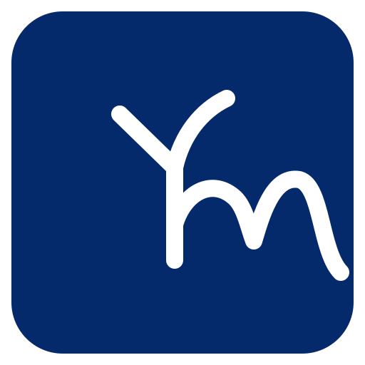

Core Ym
Tap to collect Spark · idle +0.1/sec
Growth Statebalanced

Tap to collect Spark · idle +0.1/sec
먹이와 환경을 선택하면 성장축이 바뀌고, 조건을 만족하면 프로젝트 variant로 진화합니다.
현재 상태에서는 AI / Agents, Data / Analytics, Security 계열로 진화할 가능성이 있습니다.
해금된 Ym은 숲에 자동 배치되어 Spark, Insight, Trust 생산을 보조합니다.
Ym Grove · Mobile Mockup
D-4 기반 YM 마크를 메인 캐릭터로 고정하고, 프로젝트별 파생 로고를 게임 내 Ym 생명체 도감으로 확장한 스마트폰 레이아웃 목업입니다.